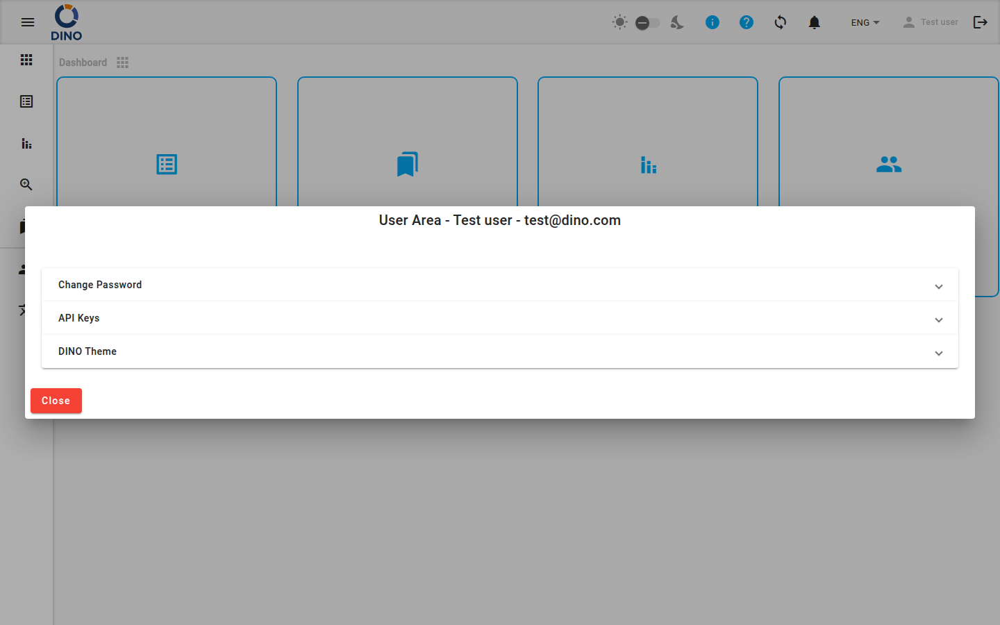

Navigazione e interfaccia
L'interfaccia di Dino è composta da una barra degli strumenti superiore e da un menu di navigazione laterale, presenti in ogni pagina dopo l'accesso.

Navigazione laterale
Il menu laterale consente di spostarsi tra le aree principali dell'applicazione.
Sezioni standard (visibili a tutti gli utenti autenticati):
| Sezione | Descrizione |
|---|---|
| Dashboard | La schermata iniziale. |
| Form | Form di raccolta dati e dati raccolti. |
| Report | Report generati. |
| Aggregazione | Visualizzazione unificata dei dati provenienti da più form. |
| Metriche | Dati di riferimento (progetti, posizioni, organizzazioni, ecc.). (Nascosta agli utenti ospiti.) |
| AI | Assistente AI (DinoGPT). |
Sezioni di amministrazione (visibili solo agli amministratori, mostrate sotto un separatore):
| Sezione | Descrizione |
|---|---|
| Utenti | Account utente e gruppi di autorizzazioni. |
| Lingue | Gestione delle traduzioni dell'interfaccia. |
Sugli schermi grandi il menu è sempre visibile a sinistra. Sugli schermi più piccoli si comprime e può essere aperto con il pulsante menu (icona hamburger) nella barra degli strumenti superiore. In entrambi i casi, fai clic sul pulsante menu per espandere le etichette del menu o comprimerle e mostrare solo le icone.
Barra degli strumenti superiore
La barra degli strumenti nella parte superiore dello schermo contiene i seguenti controlli, da sinistra a destra:
- Attiva/disattiva menu — apre o comprime il menu laterale.
- Logo — mostra il logo della tua organizzazione o quello di Dino.
- Indicatore di nuova versione — quando è disponibile una nuova versione di Dino compare un'icona di download. Fai clic per ricaricare l'applicazione e applicare l'aggiornamento.
- Crediti DINO-AI — mostra il saldo residuo dei tuoi crediti AI sotto forma di badge. Fai clic per aprire l'Area utente sul pannello Crediti. (Visibile solo se è stata configurata una chiave API DINO-AI.)
- Attiva/disattiva modalità scura / chiara — un'icona del sole, un cursore e un'icona della luna. Usa il cursore per passare dal tema chiaro a quello scuro e viceversa. (Nascosto su mobile: usa invece l'Area utente.)
- Icona info — passa il mouse sopra per vedere le informazioni sulla versione di questa installazione.
- Icona di aiuto — apre la playlist dei tutorial di Dino in una nuova scheda.
- Icona impostazioni — apre l'Area utente.
- Icona di sincronizzazione — mostra lo stato attuale della sincronizzazione dei dati. Fai clic per avviare una sincronizzazione manuale.
- Campanella delle notifiche — mostra il numero di notifiche non lette sotto forma di badge. La campanella suona quando arrivano nuove notifiche. Vedi Notifiche di seguito.
- Selettore lingua — cambia la lingua dell'interfaccia.
- Nome utente — fai clic per aprire l'Area utente.
- Icona di logout — fai clic per uscire. L'icona è disattivata mentre è in corso una sincronizzazione o quando il dispositivo è offline; in questi casi il logout non è disponibile.
Sincronizzazione dei dati
Dino sincronizza i tuoi dati con il server in background. L'icona di sincronizzazione nella barra degli strumenti mostra lo stato attuale:
| Icona | Significato |
|---|---|
sync (statica) |
Tutti i dati sono aggiornati. |
sync_problem (pulsante) |
Sono presenti modifiche locali non ancora sincronizzate. Fai clic per avviare una sincronizzazione. |
sync (rotante) |
Una sincronizzazione è in corso. |
sync_disabled |
Il dispositivo è offline; la sincronizzazione non è disponibile. |
sync con badge ! |
Si è verificato un problema di sincronizzazione. Controlla le notifiche per i dettagli. |
Al termine di una sincronizzazione, nella parte inferiore dello schermo compare brevemente una notifica:
- "Sincronizzazione completata" — tutti i dati sono stati sincronizzati correttamente.
- "Sincronizzazione completata con errori. Impossibile sincronizzare: [elementi]. Controlla le notifiche." — una o più raccolte di dati non è stato possibile sincronizzarla. Viene inoltre creata una notifica nella tua lista di notifiche.
Notifiche
Fai clic sull'icona della campanella nella barra degli strumenti per aprire il menu a tendina delle notifiche. Il badge sulla campanella mostra il numero di messaggi non letti.

Dal menu a tendina puoi:
- Fare clic su una notifica per contrassegnarla come letta.
- Fare clic sul pulsante con la freccia di una notifica (se presente) per andare direttamente all'area corrispondente dell'applicazione.
- Segnare tutte come lette — contrassegna come lette tutte le notifiche attuali.
- Visualizzare tutte le notifiche — apre la pagina completa Notifiche.
Area utente
Fai clic sull'icona impostazioni, sul tuo nome utente o sul contatore dei crediti DINO-AI per aprire la finestra di dialogo dell'Area utente. In alto sono mostrati il tuo nome completo e il tuo indirizzo email.

Cambia password
- Inserisci la password attuale.
- Inserisci una nuova password.
- Conferma la nuova password.
- Fai clic sul pulsante con la freccia per salvare.
Se la password attuale non è corretta o se le nuove password non coincidono, viene visualizzato un messaggio di errore.
Chiavi API
Visualizza o imposta la tua chiave API DINO-AI. Una volta memorizzata una chiave valida, questa viene mostrata in modalità di sola lettura. Usa l'icona a forma di occhio per mostrare o nascondere la chiave e l'icona di copia per copiarla negli appunti.
Crediti
Mostra il tuo saldo attuale di crediti DINO-AI. Se è configurata un'integrazione di pagamento, è disponibile un pulsante Aggiungi altri per acquistare crediti aggiuntivi.
Visibilità
Questa sezione è visibile solo quando è stata configurata una chiave API DINO-AI.
Tema DINO
Personalizza la combinazione di colori dell'applicazione:
- Colore primario, Colore accento, Colore di avviso — fai clic sui campi colore per aprire il selettore di colori.
- Nome del preset — digita o seleziona un nome per salvare o caricare un preset di colori.
- Fai clic su Salva per salvare i colori attuali come preset con un nome, oppure su Carica per applicare un preset salvato.
Su mobile qui compare anche un interruttore per la modalità scura / chiara.
Tutorial
Fai clic su Avvia il tour di Dino per ricominciare dall'inizio la visita guidata dell'applicazione.
Disponibilità
Questa sezione viene mostrata solo se la visita guidata è configurata nella tua installazione.
Backup e ripristino
(Solo amministratori, se abilitato.)
- Backup dei dati — scarica un'esportazione completa del database dell'applicazione in un file JSON.
- Ripristino dei dati — carica un file JSON esportato in precedenza per ripristinare il database.
Attenzione al ripristino
Il ripristino dei dati sostituirà il database attuale. Questa azione non può essere annullata.